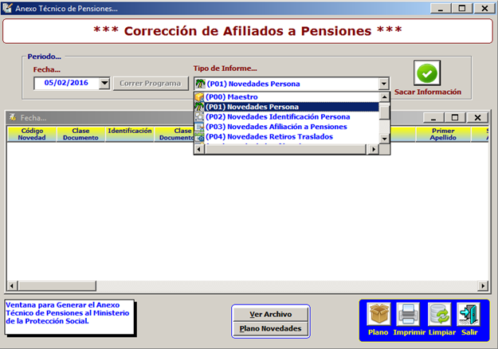
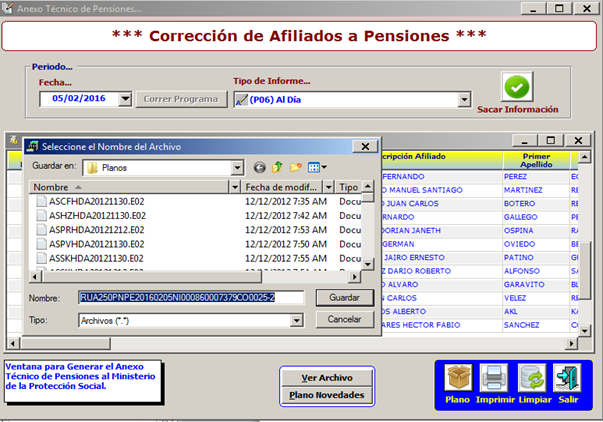

Reporta todas las novedades que se hayan generado durante la semana para los afiliados activos y en receso que se encuentran en CAXDAC.
Estas novedades son generadas de acuerdo al tipo de Informe o codigo de novedad como son:
P1: Novedades Persona.
P2: Novedades Identificación Persona.
P3: Novedades Afiliación a Pensiones.
P4: Novedades Retiros traslados.
P5: Estado de la Afiliación.
P6: Al Día.
P7: Novedades otro aportante a una Afiliación.
P8: Novedades Modificar Aportante.
P9: Novedades Desvincular Aportante.

Al dar clic en plano, da la opcion de guardar el archivo plano en una carpeta.

Los archivos planos que se generan en esta ventana deben ser transmitidos al RUAF por la aplicación de Pisis _ Sispro del Ministerio de la Protección Social, para ello se debe contar con un usuario y clave , estos archivos deben ser transmitidos a más tardar el primer dia hábil de cada semana.